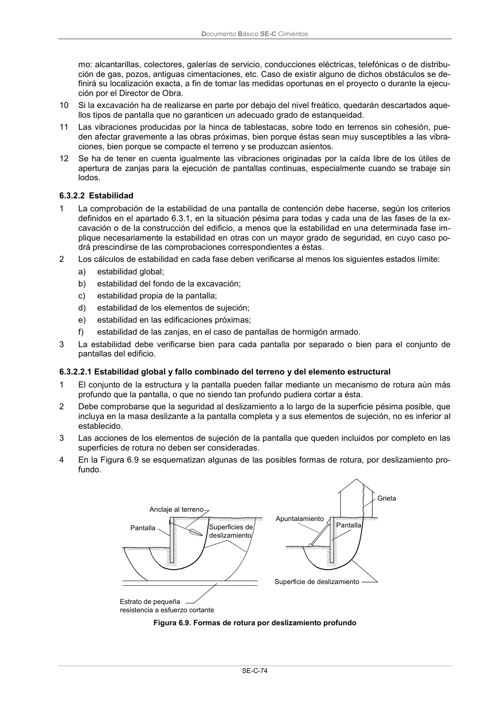

DB-SE-C · 6.3.2.2 Estabilidad · versión 2019-12-20 · capa oficial
Formatos: JSON compacto · Markdown · PDF fuente
Ámbito del documento · texto del ámbito · documento y tablas
ID técnico a0164 · PDF pág. 79 · jerarquía no validada por persona · contrastado con el literal de la página 79 (candidato tipográfico); no validado por persona · padre: raíz
6.3.2.2 Estabilidad 1 La comprobación de la estabilidad de una pantalla de contención debe hacerse, según los criterios definidos en el apartado 6.3.1, en la situación pésima para todas y cada una de las fases de la ex- cavación o de la construcción del edificio, a menos que la estabilidad en una determinada fase im- plique necesariamente la estabilidad en otras con un mayor grado de seguridad, en cuyo caso po- drá prescindirse de las comprobaciones correspondientes a éstas. 2 Los cálculos de estabilidad en cada fase deben verificarse al menos los siguientes estados límite: a) estabilidad global; b) estabilidad del fondo de la excavación; c) estabilidad propia de la pantalla; d) estabilidad de los elementos de sujeción; e) estabilidad en las edificaciones próximas; f) estabilidad de las zanjas, en el caso de pantallas de hormigón armado. 3 La estabilidad debe verificarse bien para cada pantalla por separado o bien para el conjunto de pantallas del edificio.

PDF fuente redistribuible: copia fiel enlazada en esta página (SHA256 verificado).